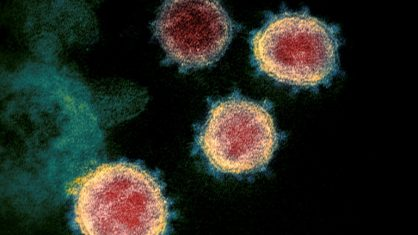
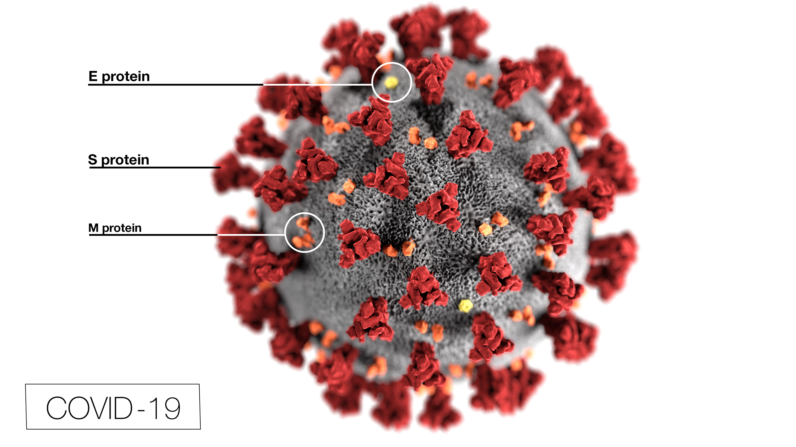
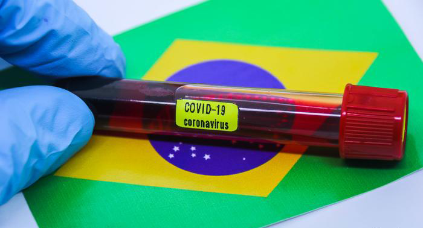
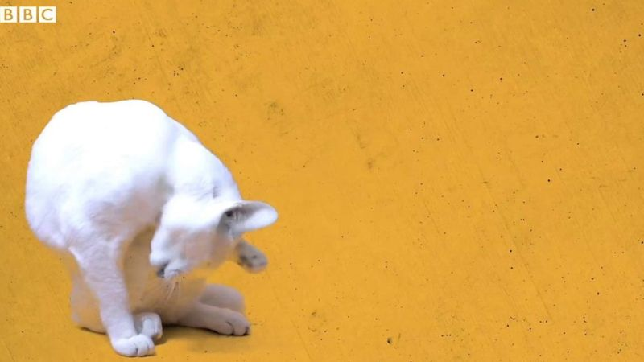

#FIQUEEMCASA #FIQUEEMCASA #FIQUEEMCASA #FIQUEEMCASA
| Últimas Notícias

Antiviral em teste detém avanço da COVID 19 em macacos
G1 - Mundo

EUA investigam hipótese de que coronavírus
tenha surgido em laboratório chinês
CNN Brasil

Número de casos de Covid-19 é sete vezes
maior, estima primeiro grande estudo no Brasil
Folha de São Paulo

Coronavírus: com medo da covid-19, donos abandonam pets
BBC Brasil